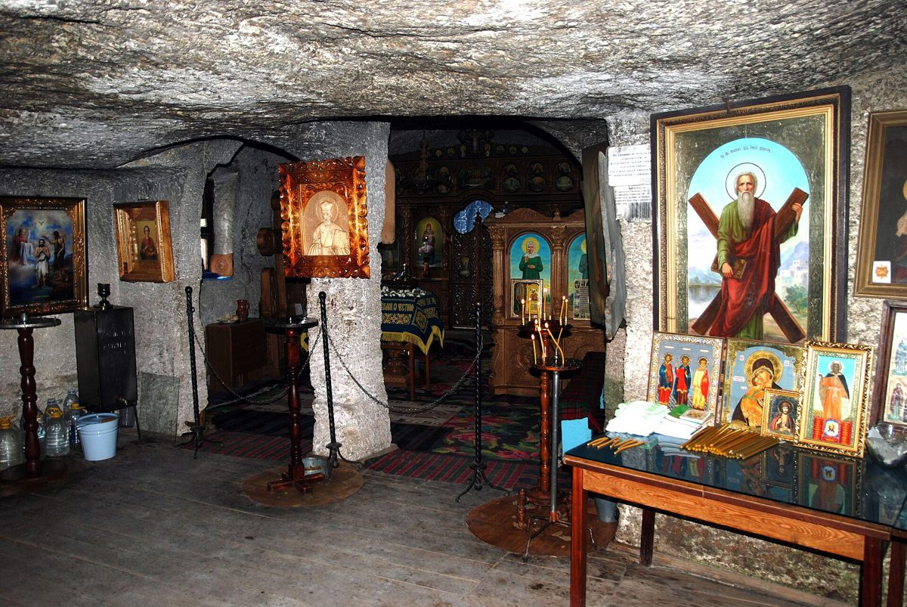
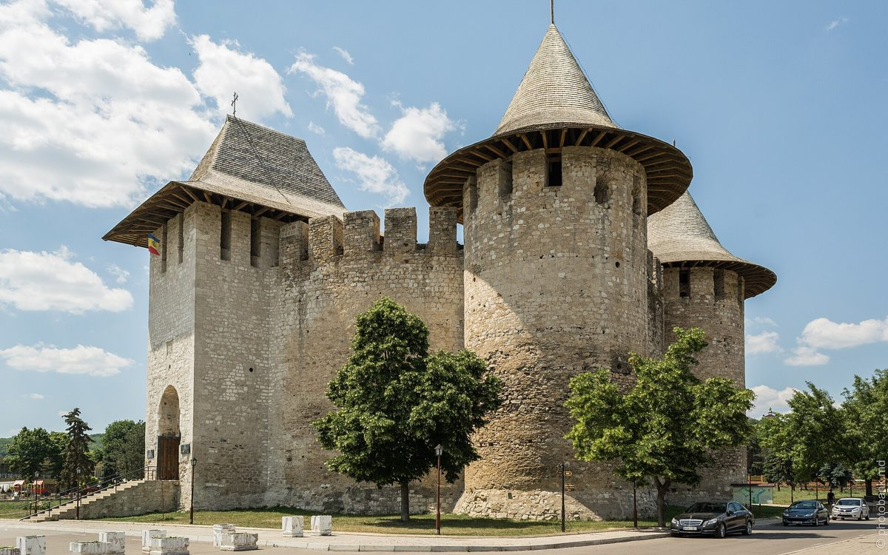
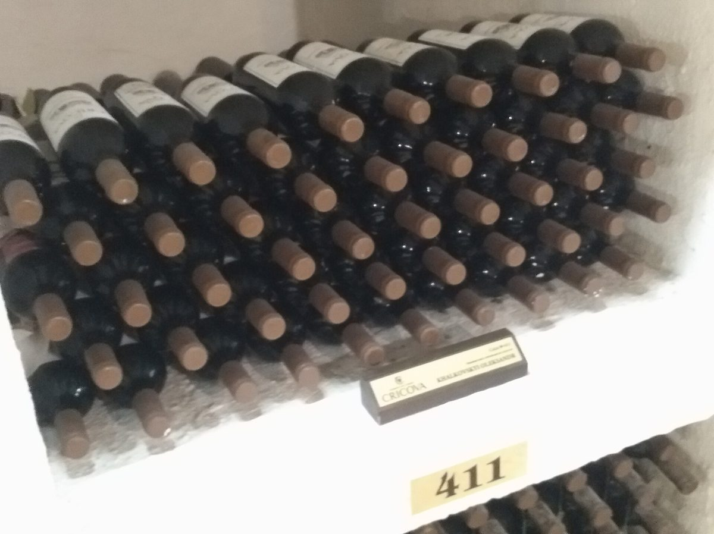

Natura
Codrii Moldovei, valea Răutului și malurile Nistrului sunt locuri ideale pentru drumeții și fotografii. Toamna, dealurile se colorează în galben și roșu.
O țară mică, dar plină de locuri frumoase: mănăstiri vechi, cetăți medievale, dealuri cu vii și oameni primitori.
Vezi obiectivele turisticeRepublica Moldova este o țară situată între România și Ucraina, cu o suprafață de aproximativ 33 800 km². Deși nu este o destinație foarte cunoscută, Moldova are multe de oferit celor care vor să descopere ceva nou și autentic.
Distanțele sunt mici, așa că în doar câteva ore poți ajunge din capitală în aproape orice colț al țării. Asta face posibilă vizitarea mai multor obiective într-o singură zi.
Codrii Moldovei, valea Răutului și malurile Nistrului sunt locuri ideale pentru drumeții și fotografii. Toamna, dealurile se colorează în galben și roșu.
Pe teritoriul țării se păstrează cetăți construite pe timpul lui Ștefan cel Mare, mănăstiri săpate în stâncă și sate cu case tradiționale.
Moldova este cunoscută pentru vinurile sale. Beciurile de la Cricova și Mileștii Mici sunt printre cele mai mari din lume și pot fi vizitate cu ghid.
Mai jos sunt trei dintre locurile pe care le recomandăm pentru prima vizită. Mai multe detalii găsești pe pagina Despre.

Complex muzeal în aer liber, cu o mănăstire săpată în stâncă deasupra râului Răut.
Citește pe Wikipedia
Cetate medievală de pe malul Nistrului, una dintre cele mai bine păstrate din țară.
Citește pe Wikipedia
Oraș subteran al vinului, cu galerii lungi de peste 100 de kilometri.
Citește pe WikipediaDacă vrei să afli mai multe sau ai nevoie de un sfat pentru traseu, scrie-ne prin formularul de pe pagina Contact. Informații generale despre țară găsești și pe Wikipedia.